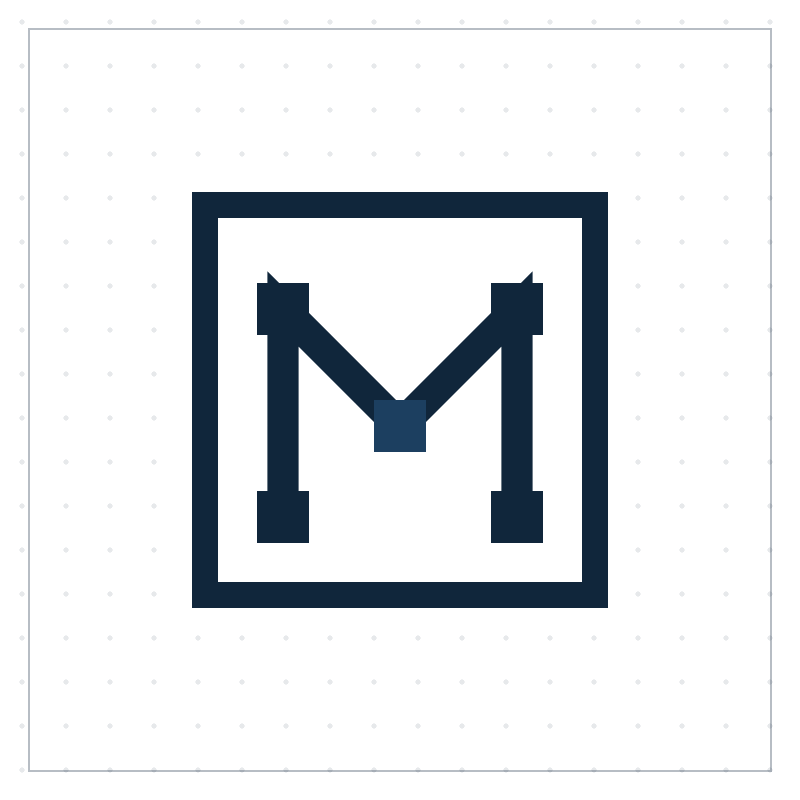
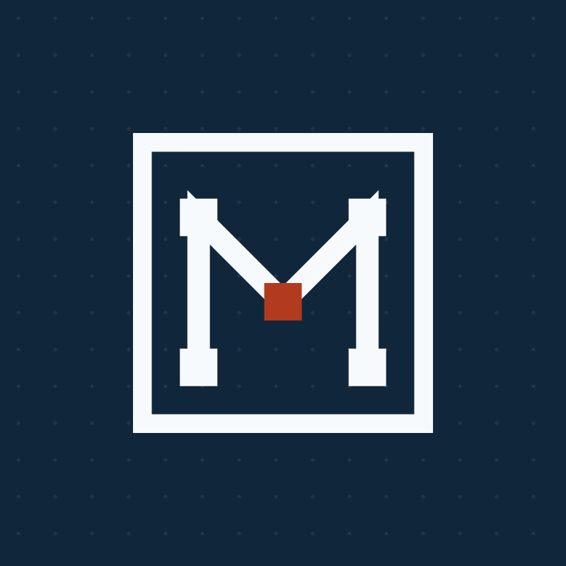
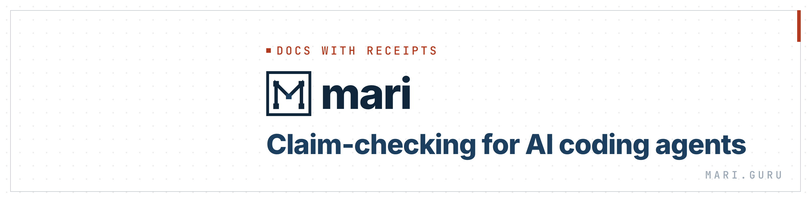
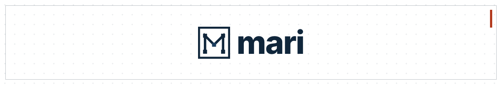
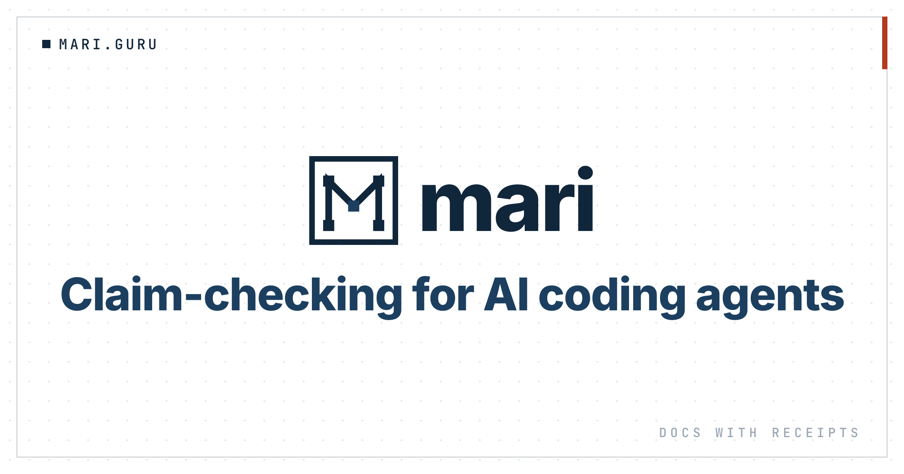

Matched to the live mari.guru brand: the schematic M mark, ink / paper / biscay, a rust accent, blueprint dot grid, and sharp corners. Every PNG is exported at 2× — upload as-is.
Paper tile for the LinkedIn company logo. Inverted ink emblem for anything that crops to a circle (LinkedIn profile photo, Calendly avatar) — the mark is centered so the circle never clips it.


1584×396. Content is held right-of-center so your profile photo (lower-left) never covers it.

4200×700 (6:1) — LinkedIn's exact spec. Off-ratio images get rejected on upload. Just the centered mark + wordmark, since LinkedIn trims covers and shows the tagline in its own field. Put the tagline in LinkedIn's Tagline field.

1200×630, matched to the live link-preview layout. Use as a Calendly header, an OpenGraph card, or any share image.

Set the Calendly brand color to ink #10263B.
mari wordmark and headlines. JetBrains Mono for the ▪ MARI.GURU labels and microcopy. Sharp corners, blueprint dot grid, thin ink frame, one rust accent per canvas.| File | Size (2×) | Upload to |
|---|---|---|
| avatar.png | 800×800 | LinkedIn profile photo + Calendly avatar (both crop to a circle) |
| logo-square.png | 800×800 | LinkedIn company logo |
| li-personal.png | 3168×792 | LinkedIn personal profile banner |
| li-company.png | 2256×382 | LinkedIn company page cover |
| card.png | 2400×1260 | Calendly header · OG / social share |
src/; the real mark, live OG image, and sampled colors are in live/. Re-render with the Chrome command in README.md.